1. Setup In local machine
Setting up a Spring Boot application on your local machine is relatively straightforward. Here’s a step-by-step guide to getting a Spring Boot application up and running:
1.1. Prerequisite
JDK Setup
brew install openjdk-> install using homebrew- Download JDK
javac --version-> check version of Java
Java Prompt
jshell-> Execute using command prompt (Java Playground)paulus_a@JKMB140139 ~ % jshell | Welcome to JShell -- Version 17.0.9 | For an introduction type: /help intro [jshell> 9+2 $1 ==> 11 [jshell> 11-3 $2 ==> 8 [jshell> System.out.print(10); 10 [jshell> System.out.print("Hello Java"); Hello Java jshell>
Code Editor
1.2. How created project
-
3 types of Build System
- IntelliJ
- IntelliJ IDEA's build system refers to the internal system that helps build and manage the development of Java applications within the IDE itself. It is tightly integrated with the IDE.
- IntelliJ IDEA's build system refers to the internal system that helps build and manage the development of Java applications within the IDE itself. It is tightly integrated with the IDE.
- Maven
- Maven is a build automation tool primarily for Java projects. It focuses on the management of project dependencies, compiling, testing, packaging, and deployment.
- It defines a standard way of building projects with a pom.xml file where you specify your project dependencies, build configuration, and plugins.
- Gradle
- Like Maven, Gradle is a build automation tool that can manage project dependencies, compile, test, and package code.
- However, Gradle is more flexible and dynamic than Maven. While Maven relies on XML for configuration (pom.xml), Gradle uses Groovy or Kotlin DSL (domain-specific languages) in build scripts (build.gradle or build.gradle.kts), making it more expressive and concise.
- IntelliJ
-
IntelliJ
- Step 1 -> Initiate new project 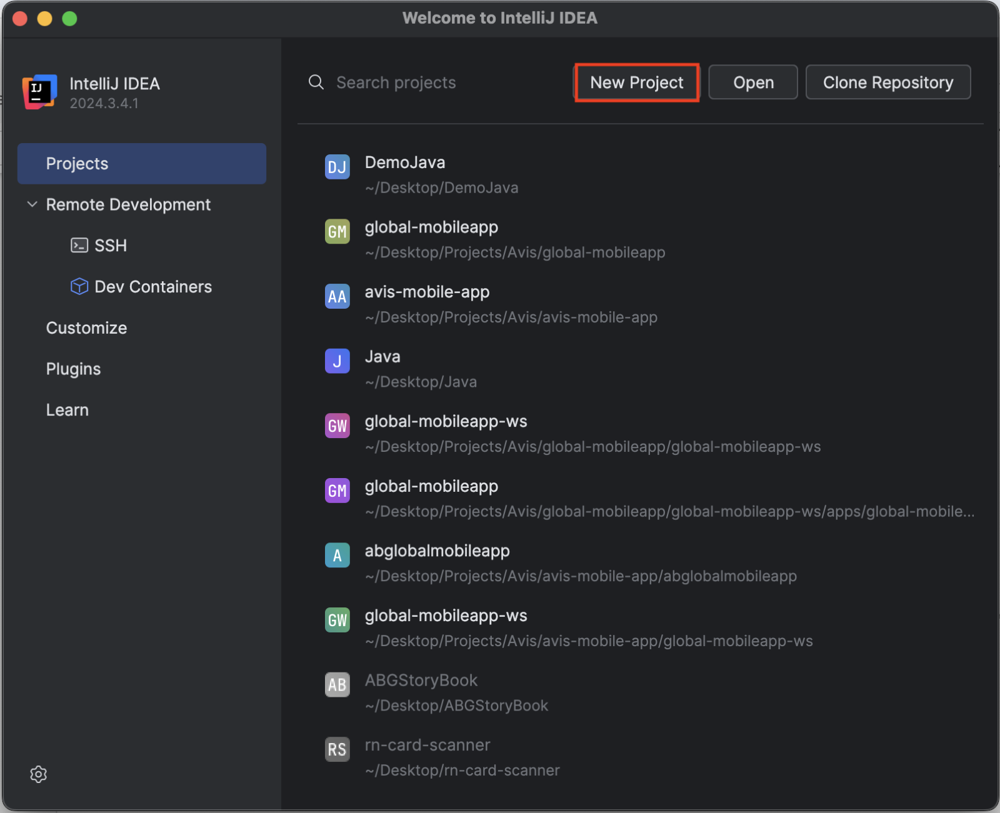
- Step 2 -> Setup new project 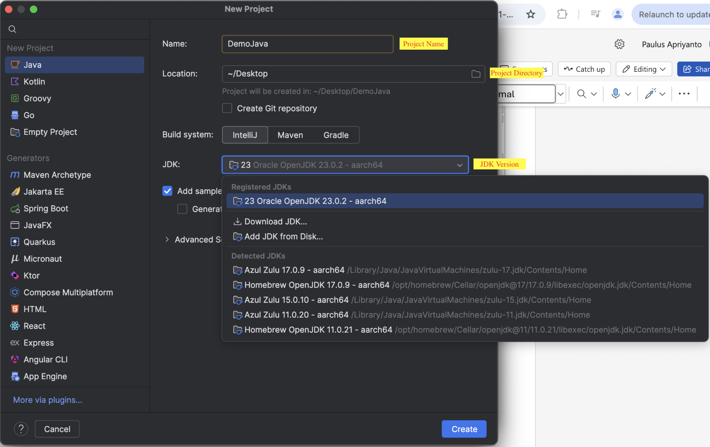
- Step 3 -> Create a project
- Visual Studio Code
- Step 1 -> Install all necessary extensions
- Spring Boot Extension Pack 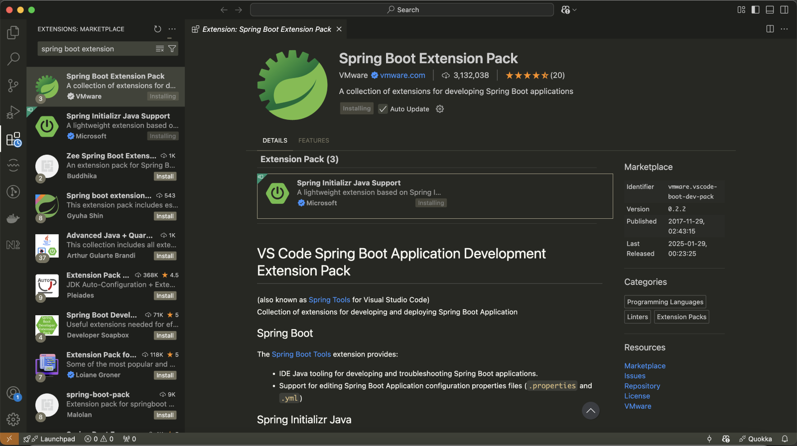
- Spring Boot Extension Pack 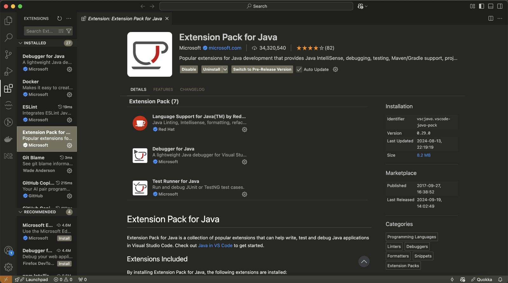
- Step 2 -> Initiate new project
- You can go through shortcut
Create Java Projectand follow the steps, or with bash commands. 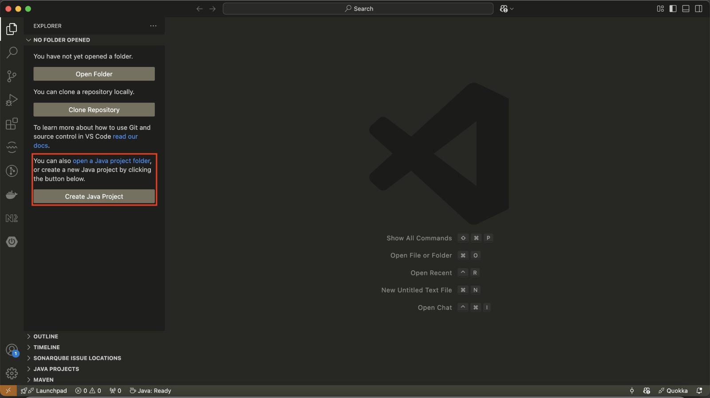 >Spring Initializr: Create a Maven Project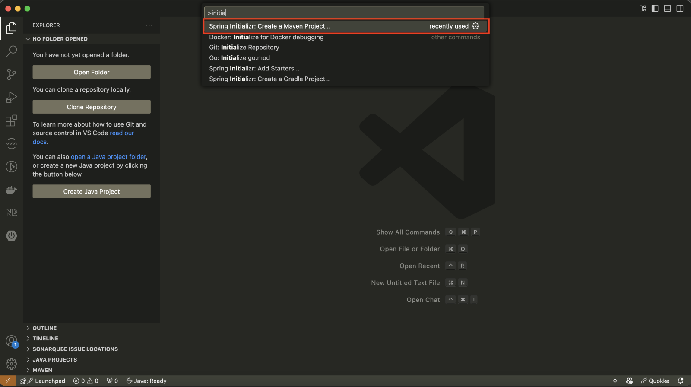- Choose JAR (Standalone Applications) packaging type, for modern Spring Boot applications aiming for simplicity and ease of deployment, packaging as a JAR is often recommended. 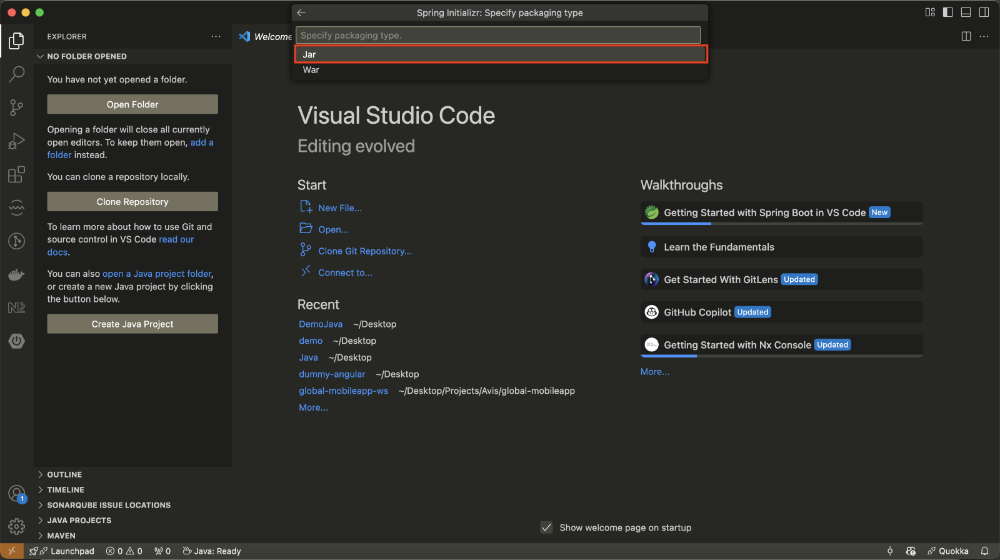
- You can go through shortcut
- Step 1 -> Install all necessary extensions
Folder Structure
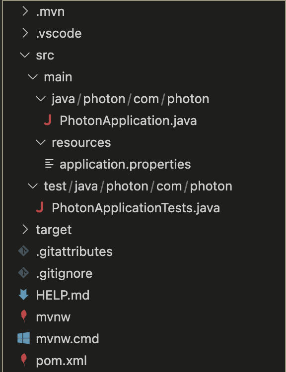
Adding Dependencies (Visual Studio Code)
- Step1 -> Go to
pom.xmlfile 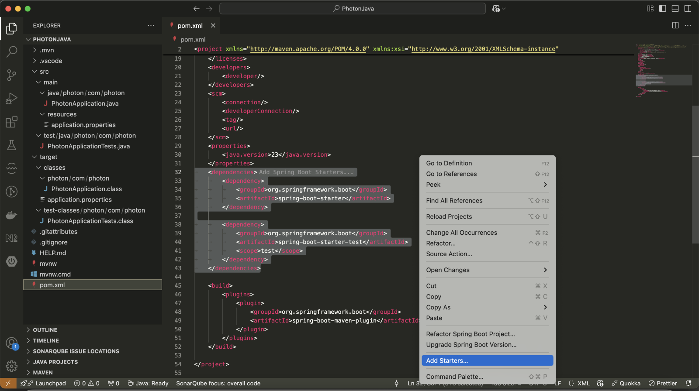 - Step 2 -> Right click and choose
Add Starters - Step 3 -> looking for dependencies 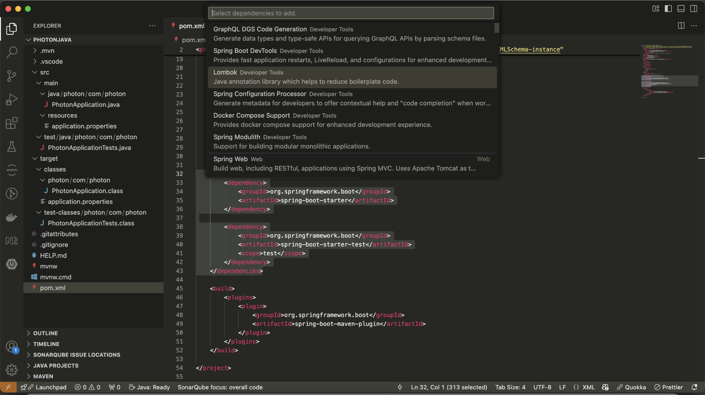
- Step 4 -> Proceed 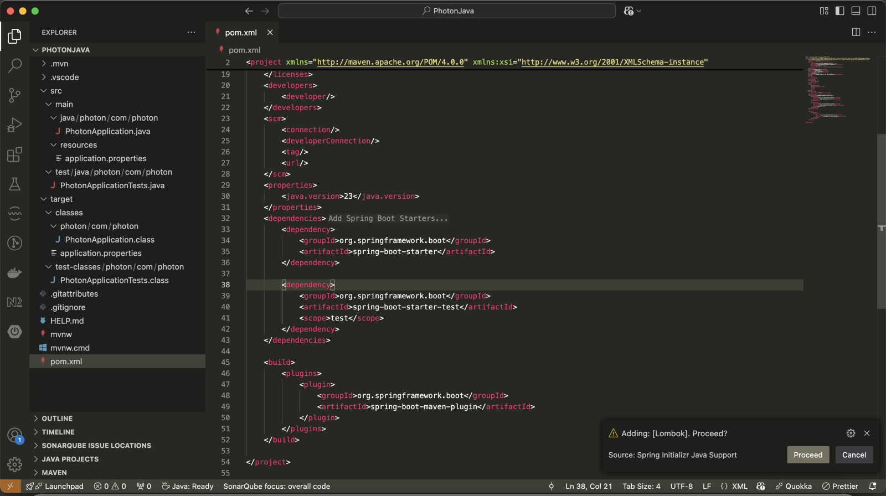
- Step 5 -> Dependency added 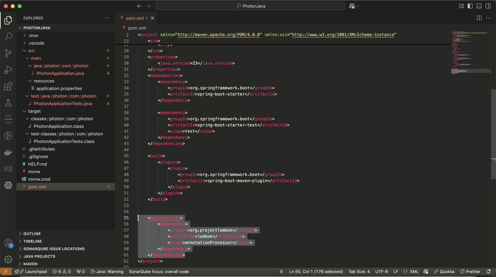
How to run
- Step 1 -> Install
mavento your local machine- Mac ->
brew install maven - Windows -> Install
- Mac ->
- Step 2 -> go to root project then run this command
mvn spring-boot:run